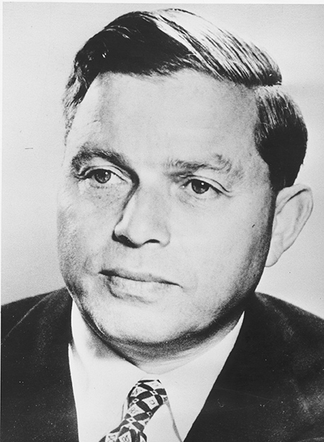

There are two ships in this class, Andrew J. Barberi and the Samuel I. Newhouse. The Barberi entered service in 1981 and the Newhouse in 1982. Each boat carries 5,200 passengers, with a crew of 15. The boats are 310 feet long, 69 feet 10 inches wide, with a draft of 13 feet 6 inches, 3,335 gross tonnage, service speed of 16 knots, and 7,000 horsepower.
The Barberi Class is Longer than a football field, Barberi class is the largest boat in the Fleet measuring 310 feet. Built by the Equitable Shipyards of New Orleans, Louisiana from 1981-82 they displace 3,335 tons. This class honors Samuel New-house and Andrew Barberi. Andrew Barberi was a popular local hero, WWII veteran, teacher and football coach. Samuel Newhouse founded Conde Nast which is part of the Staten Island Advance. It is Staten Island's local paper. The Barberi is passenger-only. The car deck has been eliminated in favor of increased seat-ing. The uppermost deck, the bridge deck, has large fold-down windows that are opened in the warm weather; so views of the harbor and gentle breezes can be enjoyed
Andrew J. (Andy) Barberi, was coach of the Curtis High School football team and a key figure in the growth of scholastic football on Staten Island. Mr. Barberi's name has been synonymous with Curtis football since the 1930's. He was an aid and an inspiration for many generations of Staten Island kids. "Winning football was not Mr. Barberi's goal, helping kids was." said friend Sal Somma. Somma recalled that on many occasions Mr. Barberi would use his own money to help a player through a rough time. "If a kid had to go to Princeton to apply for a scholarship, Andy would see to it that the kid had money to get there. He would take it out of his own pocket. That was the type of guy he was." (photo courtsey of Staten Island)
Newhouse quit school and enrolled in a six-week bookkeeping course at the Gaffrey School in Manhattan which enabled him to secure a job as an office boy working for Hyman Lazarus, a lawyer, police court judge, and politician in Bayonne. At age sixteen, he was promoted to office manager of the Lazarus law firm.
Noting Newhouse's work ethic and enthusiasm, Lazarus tasked Newhouse to manage the money-losing Bayonne Times (a local newspaper Lazarus had acquired a majority interest in due to an unpaid legal bill) allowing Newhouse to keep half of the profits if successful. Newhouse quickly determined that the paper was not earning enough fees from advertisements and personally solicited new customers while also assisting them in planning the timing of store sales. The paper returned to profitability and he received a 20 percent ownership interest as payment (after continued success, his share increased to 50 percent). Later, he decided to attend law school in the evenings and in 1916, he graduated from the New Jersey Law School (now part of the Rutgers Law School) in Newark, New Jersey. His career was short-lived: he was so humiliated after losing the one case he took to trial, he paid his client the full amount of the damages he had requested.
In 1922, taking all his personal savings and partnering with Lazarus, he bought 51 percent of the Staten Island Advance for $98,000 and soon returned the paper to profitability. In 1924, Lazarus died and he purchased Lazarus' share from his widow as well as the 49 percent that he did not own. Newhouse had found his calling and began to expand his empire purchasing, merging, and returning to profitability numerous papers.
Newhouse focused on purchasing bargain-priced papers in growing communities; he had no interest in starting papers or in unrelated ventures (he even declined an offer to purchase the New York Yankees). Typically, he would acquire a city's oldest newspaper and then purchase the city's second newspaper thereby allowing him to set advertising rates. Although he would generally promise to keep both papers in businessand in competition, he typically would merge the two (which generally meant closing the afternoon paper and keeping the morning) effectively establishing a monopoly and then using the profits to purchase additional newspapers.
Newhouse largely ran his various interests out of a brown leather briefcase and kept its figures in his head, even as they grew into an empire of 20newspapers, as well as numerous magazines, radio stations and television stations. He never had what could be called a formal headquarters.